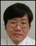
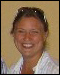

Conference Home

Conference Committee
General Chair University of Virginia, USA |
Organizing Chair University of Alabama at Birmingham, USA |
|||
 |
Research Program Co-Chair Universidade Nova de Lisboa, Portugal |
Research Program Co-Chair Siemens AG, Germany |
||
 |
Industrial Program Co-Chair Robert Baillargeon Panasonic Automotive Systems, USA |
Industrial Program Co-Chair Accenture, USA |
||
Workshops Chair Vanderbilt University, USA |
BoFs Chair University of Pernambuco, Brazil |
|||
|  | Demonstrations Co-Chair Kyushu Institute of Technology, Japan |
Demonstrations Co-Chair Vrije Universiteit Brussel, Belgium |
||
 |
Publicity Co-Chair University of Chile, Chile |
Publicity Co-Chair Bilkent University, Turkey |
||
|  | Student Events Co-Chair University of Victoria, Canada |
 |
Student Events Co-Chair Lancaster University, UK |
|
Student Volunteers Co-Chair Iowa State University, USA |
Student Volunteers Co-Chair Drexel University, USA |
|||
Web Chair University of Alabama at Birmingham, USA |